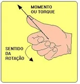

O que é torque ?
O torque ou momento é uma grandeza vetorial e, por isto, possui módulo, direção e sentido. A direção é a do eixo de rotação, o sentido é dado pela regra da mão direita, isto é, com os dedos curvados da mão direita giramos de r para F ao longo do menor ângulo entre r e F.
O polegar estendido apontará o sentido do momento da força M (torque). A unidade de torque é força x distância, ou seja, N. m (S I). o mesmo que trabalho de uma força, entretanto torque é uma grandeza vetorial, e trabalho uma grandeza escalar. A diferença está em que no trabalho a força é paralela à distância e no Torque ou Momento, a força é perpendicular à distância que une o ponto de aplicação ao eixo de rotação.
Torque, ou momento de uma força, é a tendência que uma força tem de rotacionar um corpo sobre o qual ela é aplicada. O torque é um vetor perpendicular ao plano formado pelos vetores força e raio de rotação. O vetor torque pode ser calculado por meio do produto vetorial entre força e distância. Sempre que uma força for aplicada a alguma distância do eixo de rotação de um corpo, esse corpo estará sujeito à rotação. Se esse corpo não está rotacionando ou rotaciona com velocidade angular constante, dizemos que ele se encontra em equilíbrio rotacional. O equilíbrio rotacional indica que a resultante dos torques que atuam sobre um corpo é nula e, por isso, esse corpo rotaciona com velocidade constante ou nula. Em outras palavras, quando o torque resultante sobre um corpo é nulo, esse corpo não apresenta aceleração angular. O torque pode ser entendido como o agente dinâmico das rotações. Dessa forma, ele está para os movimentos de rotação, assim como a força está para os movimentos de translação. Se quisermos fazer que um corpo gire em torno de algum ponto, devemos exercer um torque sobre ele.
Unidade de torque
A unidade do torque, de acordo com o Sistema Internacional, é o Newton vezes metro (N.m). Por definição, quando um corpo é rotacionado no sentido horário, seu torque é negativo; no caso contrário, o torque aplicado sobre ele tem módulo positivo. Além disso, a direção e o sentido do vetor torque podem ser facilmente determinados por meio da regra da mão direita. Confira o esquema a seguir:
.png)